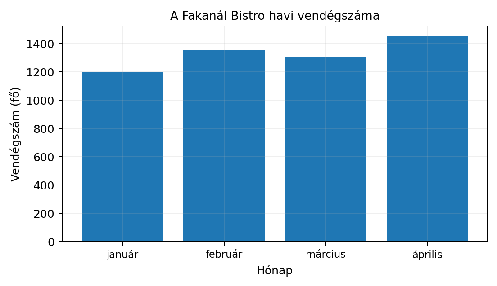

Egy étterem vezetője havonta átnézi a számokat, és ilyen kérdéseket tesz fel: Miből jön a bevételünk? Nőtt-e a vendégszám az év elejéhez képest? Elértük-e a havi tervet? Az ilyen kérdésekre nem elég egyetlen szám, például a havi bevétel. Azt is tudni kell, hogy egy-egy tétel mekkora részt képvisel az egészből, és hogy egy adat hogyan viszonyul egy korábbi vagy tervezett értékhez. A viszonyszámok pontosan ezt fejezik ki: két, összetartozó adatot osztunk egymással, és az eredményt százalékban is megadhatjuk. A szakácsnak, konyhafőnöknek ezért kell érteni a viszonyszámokat: étlapot, menütervet, anyagköltséget, bérköltséget és vendégszámot is elemzünk velük.
Képzeld el, hogy a „Fakanál Bistro” három bevételi csoportból gazdálkodik: étel, ital és egyéb, például desszert vagy rendezvény. A havi bevétel 12 500 ezer Ft. Ez önmagában nem mutatja meg, hogy a vendégek többet költenek-e italra, mint ételre. Ha azonban kiszámoljuk, hogy az étel 8 000 ezer Ft, az ital 3 500 ezer Ft, az egyéb 1 000 ezer Ft, akkor az étel aránya 64 %, az italé 28 %, az egyébé 8 %. Ezt a fajta szétosztást nevezzük megoszlási viszonyszámnak. Ugyanígy vizsgáljuk például egy étlapon a különböző ételcsoportok forgalmát, vagy egy menü anyagköltségének összetételét.
Definíció. A viszonyszám két egymással összefüggő adat hányadosa. Ha a két adat azonos fajta (pl. Ft/Ft), az eredményt százalékban adjuk meg, a hányadost 100-zal szorozva; ha különböző fajtájú (pl. Ft/fő), intenzitási viszonyszámot kapunk. A százalékos forma:
A viszonyszám tehát azt mutatja meg, hogy az egyik adat hány százaléka a másiknak. Az adatok lehetnek forint, vendégszám, adagszám, kilogramm vagy bármilyen más; a százalékos viszonyszámnál (megoszlás, dinamika) a két adat mértékegysége azonos. Intenzitási viszonyszám például az átlagköltség: 12 500 000 Ft / 5 300 vendég ≈ 2 358 Ft/fő; vagy az egy dolgozóra jutó adagszám.
A vendéglátásban leggyakrabban ezeket a viszonyszámokat használjuk:
Szabály. A viszonyszám százalékos értékét általában egy tizedesre kerekítjük, és kiírjuk a % jelet. Ha a számításhoz tovább akarunk szorozni, a százalékos értéket előbb tizedestörtté alakítjuk vissza: például a 112,5 % jelentése 1,125.
A megoszlási viszonyszám azt mutatja meg, hogy egy rész mekkora hányadát alkotja az egésznek.
Definíció. Megoszlási viszonyszámnak nevezzük a rész és az egész hányadosát százalékban:
ahol:
Példa. A Fakanál Bistro havi bevételéből az étel 8 000 ezer Ft, az ital 3 500 ezer Ft, az egyéb 1 000 ezer Ft. A teljes bevétel:
Az étel megoszlási viszonyszáma:
Az italé:
Az egyébé:
Összefüggés. A megoszlási viszonyszámok összege kerekítés nélkül mindig 100 %. Ezért a részeket úgy is ellenőrizhetjük, hogy összeadjuk őket: 64,0 % + 28,0 % + 8,0 % = 100,0 %. Ha az összeg kerekítés miatt 99,9 % vagy 100,1 %, az nem számítási hiba, de jelezzük a kerekítést.
A megoszlási viszonyszám segítségével gyorsan összehasonlítható az összetétel. Például ha egy másik hónapban az ital aránya 34 %-ra nő, akkor a vendégek italra többet költöttek, mint az előző hónapban.
Ha azt vizsgáljuk, hogyan változik egy adat időben, például a havi vendégszám vagy a havi bevétel, akkor dinamikus viszonyszámot számolunk.
Definíció. A dinamikus viszonyszám az idősor egyes értékeinek és egy viszonyítási alapnak a hányadosa százalékban. Két gyakori fajtája van:
A bázisviszonyszám képlete:
A láncviszonyszám képlete:
ahol:
Példa és számítás. A Fakanál Bistro havi vendégszáma az első négy hónapban:
| Hónap | Vendégszám (fő) | Bázisviszonyszám (január = 100 %) | Láncviszonyszám (előző hónap = 100 %) |
|---|---|---|---|
| január | 1200 | 100,0 % | – |
| február | 1350 | 112,5 % | 112,5 % |
| március | 1300 | 108,3 % | 96,3 % |
| április | 1450 | 120,8 % | 111,5 % |
A februári bázisviszonyszám:
A márciusi láncviszonyszám:
A láncviszonyszám értelmezése: a márciusi vendégszám a februári 96,3 %-a, azaz 3,7 %-kal csökkent. A bázisviszonyszám szerint viszont a márciusi érték a januári 108,3 %-a, vagyis 8,3 %-kal magasabb a januári szintnél. Ezért fontos mindig kimondani, hogy mihez viszonyítunk.
Figyelem. A bázis- és a láncviszonyszámot ne keverjük. A láncviszonyszám mindig az előző időszakhoz mér, ezért a sorozat mozgását hónapról hónapra mutatja. A bázisviszonyszám hosszabb távú képet ad, mert mindent ugyanahhoz az induló időszakhoz mér.
A vendéglátó gyakorlatban a vendégszám, a bevétel és az anyagköltség elemzésére is alkalmas a dinamikus viszonyszám. Például ha a konyhafőnök a heti anyagköltséget hasonlítja az előző héthez, akkor láncviszonyszámot használ, ha pedig a szezon indulásához, akkor bázisviszonyszámot.
Az alábbi diagram a vendégszám alakulását mutatja a példa adatai alapján.

A diagram nem helyettesíti a viszonyszámot, de jól mutatja a változás irányát.
A vendéglátó üzletben gyakran van havi bevételi, vendégszám- vagy anyagköltség-terv. Azt is ki kell számolni, hogy a terv hogyan viszonyul a bázishoz, és a tényleges teljesítmény hogyan viszonyul a tervhez.
Definíció. A tervfeladat-viszonyszám megmutatja, hogy a tervezett érték hány százaléka a bázisidőszak értékének:
ahol:
Definíció. A tervteljesítési viszonyszám megmutatja, hogy a tényleges érték hány százaléka a tervezett értéknek:
ahol:
A két viszonyszámot gyakran együtt használjuk, mert a tervfeladat-viszonyszám a célkitűzést, a tervteljesítési viszonyszám pedig a cél megvalósulását méri.
Összefüggés. A tervfeladat- és a tervteljesítési viszonyszám szorzata a tényleges érték és a bázis hányadosát adja, azaz a dinamikus viszonyszámot:
A szorzáshoz a százalékos értékeket tizedestörtre váltjuk. Például ha a tervfeladat 116,7 % és a tervteljesítés 103,6 %, akkor:
Ez azt jelenti, hogy a tényleges érték a bázis kb. 120,8 %-a; a pontos érték , a 0,1 százalékpontos eltérés a kerekített tényezőkből adódik.
Példa. A Fakanál Bistro áprilisi vendégszám-terve 1400 fő, a januári bázis 1200 fő volt, a tényleges áprilisi vendégszám pedig 1450 fő lett. Számítsuk ki a viszonyszámokat!
Adott: fő, fő, fő.
Keresett: , , valamint a kettő szorzatával ellenőrzött dinamikus viszonyszám.
Tervfeladat:
Tervteljesítés:
Ellenőrzés:
A kapcsolat pedig:
Értelmezés: a terv 116,7 %-os szintet írt elő a januári bázishoz képest, ezt a tervet 103,6 %-ra teljesítették, így a tényleges vendégszám a bázis 120,8 %-a lett.
A „Fakanál Bistro” második negyedévi havi ételbevétele, bázis- és láncviszonyszámokkal:
| Hónap | Ételbevétel (ezer Ft) | Bázisviszonyszám (április = 100 %) | Láncviszonyszám (előző hónap = 100 %) |
|---|---|---|---|
| április | 9000 | 100,0 % | – |
| május | 9900 | 110,0 % | 110,0 % |
| június | 9405 | 104,5 % | 95,0 % |
A májusi bázisviszonyszám:
A júniusi láncviszonyszám:
Az eredmény azt mutatja, hogy az ételbevétel májusban 10 %-kal haladta meg az áprilisi szintet, de júniusban a májusihoz képest 5 %-kal csökkent. Ez fontos jel lehet a konyhafőnök számára: érdemes megnézni, miért csökkent a vendégek ételre költött pénze júniusban, pedig a bázishoz képest még mindig növekedés látszik.
Számítás 1. Egy rendezvényen 240 adag menüt adtak el. Ebből 96 adag húsos, 72 adag vega, 48 adag gluténmentes, 24 adag gyermekmenü volt. Számítsd ki a megoszlási viszonyszámokat!
Adott: adag, , , , adag.
Keresett: mindegyik csoportra.
Képlet:
Behelyettesítések:
Ellenőrzés: , tehát a számítás helyes.
Számítás 2. Egy konyha heti anyagköltsége az első héten 600 ezer Ft, a második héten 660 ezer Ft, a harmadik héten 594 ezer Ft volt. Számítsd ki a második hétre a bázisviszonyszámot (első hét = 100 %) és a harmadik hétre a láncviszonyszámot!
Adott: (1. hét), (2. hét), ezer Ft (3. hét).
Keresett: (2. hét bázisviszonyszáma), (3. hét láncviszonyszáma).
Képletek:
Behelyettesítés:
Értelmezés: a második héten az anyagköltség 10 %-kal nőtt az első héthez képest, a harmadik héten pedig a második héthez képest 10 %-kal csökkent. Az anyagköltség csökkenése utalhat jobb raktárkihasználásra, de utalhat beszerzési akcióra is, ezért további vizsgálatot igényel.
A viszonyszámok minőségellenőrzése azt jelenti, hogy a kiszámolt értéket nem hagyjuk magára, hanem ellenőrizzük az ésszerűségét és a számítási szabályokat.
Hiba: A megoszlási viszonyszámnál a részt egy
másik részhez hasonlítják.
Ok: Nem rögzítették, mi az egész.
Helyes gyakorlat: A megoszlás mindig rész/egész.
Először írjuk fel az egészet, majd az egyes részeket.
Hiba: A láncviszonyszámhoz a bázisidőszakot
használják.
Ok: A bázis- és láncviszonyszám képletének
összekeverése.
Helyes gyakorlat: Láncviszonyszámnál mindig az előző
időszak a viszonyítási alap:
.
Hiba: A tervfeladat- és tervteljesítési
viszonyszámot egyszerűen százalékpontokban adják össze, például 110 % +
105 % = 215 %.
Ok: A százalékos viszonyszámok közötti kapcsolat
szorzás, nem összeadás.
Helyes gyakorlat: A kapcsolatot tizedestörttel
számoljuk:
,
vagyis 115,5 %.
Hiba: A százalékos eredményt tizedestörtté
váltás nélkül szorozzák be egy másik képletbe.
Ok: A % jel elhagyása.
Helyes gyakorlat: Írásban is jelöljük: 120 % =
1,20.
A Fakanál Bistróban a konyhafőnök azt tapasztalta, hogy a hétvégi bevétel erős, a hétköznapi gyenge. A heti bevételi adatokat bázisviszonyszámként számolta ki, az év első hetéhez viszonyítva, és azt látta, hogy a hétköznapi hetek is növekednek. A láncviszonyszám viszont megmutatta, hogy a 8. héten az előző héthez képest 12 %-kal csökkent a bevétel. A konyhafőnök a láncviszonyszámot nézve vette észre, hogy az adott héten egy helyi rendezvény elszívta a vendégeket. A tanulság: a bázisviszonyszám hosszabb távú képet ad, de a rövid távú visszaesést csak a láncviszonyszám mutatja meg.
1. feladat (A)
Számítsd ki egy étterem heti bevételének megoszlási viszonyszámait! A
heti bevétel 3 000 ezer Ft, ebből étel 1 800 ezer Ft, ital 900 ezer Ft,
desszert 300 ezer Ft.
2. feladat (A)
Melyik viszonyszámot használod, ha a júniusi forgalmat a januárihoz
hasonlítod? Melyiket, ha a júniusi forgalmat a májusihoz?
3. feladat (B)
Egy étterem májusi vendégszáma 2000 fő volt. A júniusi terv 2200 főt írt
elő, a tényleges júniusi vendégszám 2100 fő lett. Számítsd ki a
tervfeladat-, a tervteljesítési és a májushoz viszonyított dinamikus
viszonyszámot! Ellenőrizd a tervfeladat és a tervteljesítés
kapcsolatával!
4. feladat (B)
Adott a konyha negyedéves anyagköltsége ezer Ft-ban: I. negyedév 4000,
II. negyedév 4400, III. negyedév 4180, IV. negyedév 4840. Készíts
táblázatot a bázisviszonyszámról (I. negyedév = 100 %) és a
láncviszonyszámról! Értelmezd a III. negyedév láncviszonyszámát!
5. feladat (C)
A Fakanál Bistro havi költségeinek összetétele: anyagköltség 4 200 ezer
Ft, bérköltség 2 800 ezer Ft, egyéb költség 1 400 ezer Ft. Számítsd ki a
megoszlási viszonyszámokat! Melyik költségcsoport aránya a legnagyobb?
Hogyan változna az anyagköltség aránya, ha az anyagköltség 4 800 ezer
Ft-ra nőne, miközben a másik két tétel változatlan marad?
6. feladat (D)
Egy tanuló a következőt számítja: a tervfeladat 110 %, a tervteljesítés
105 %, ezért a dinamikus viszonyszám 215 %. Mi a hiba? Javítsd ki, és
mutasd meg a helyes számítást!
1. feladat (A)
Adott:
ezer Ft,
,
,
ezer Ft.
Keresett: a három megoszlási viszonyszám.
Megoldás:
Ellenőrzés: .
2. feladat (A)
A júniusi forgalom januárihoz hasonlításához bázisviszonyszámot
használunk. A júniusi forgalom májusihoz hasonlításához
láncviszonyszámot használunk.
3. feladat (B)
Adott:
fő,
fő,
fő.
Keresett:
,
,
.
Megoldás:
Ellenőrzés: . A kerekítés miatt tized százalékpont eltérés elfogadható; a pontos érték 105,05 %, ami 105,1 %-ra kerekíthető. A közelítő egyezés mutatja, hogy a kapcsolat fennáll.
4. feladat (B)
Adott: az anyagköltségek ezer Ft-ban: 4000, 4400, 4180, 4840.
Keresett: bázis- és láncviszonyszámok táblázata.
Megoldás:
| Negyedév | Anyagköltség (ezer Ft) | Bázisviszonyszám (I. = 100 %) | Láncviszonyszám (előző negyedév = 100 %) |
|---|---|---|---|
| I. | 4000 | 100,0 % | – |
| II. | 4400 | 110,0 % | 110,0 % |
| III. | 4180 | 104,5 % | 95,0 % |
| IV. | 4840 | 121,0 % | 115,8 % |
A III. negyedév láncviszonyszáma 95,0 %, tehát az anyagköltség a II. negyedévhez képest 5,0 %-kal csökkent.
5. feladat (C)
Adott: anyagköltség 4200 ezer Ft, bér 2800 ezer Ft, egyéb 1400 ezer
Ft.
Keresett: a megoszlási viszonyszámok, és az új anyagköltség
aránya.
Megoldás:
Először az összes költség:
Az anyagköltség aránya:
A bérköltségé:
Az egyébé:
A legnagyobb az anyagköltség aránya 50 %-kal. Ha az anyagköltség 4800 ezer Ft-ra nő, az új összköltség:
Az új anyagköltség-arány:
Tehát az anyagköltség aránya 50 %-ról 53,3 %-ra nőne.
6. feladat (D)
A tanuló hibája, hogy a 110 %-ot és a 105 %-ot közvetlenül összeadta. A
viszonyszámok között szorzás van, és a százalékértékeket előbb
tizedestörtté kell váltani.
Helyes számítás:
A dinamikus viszonyszám tehát 115,5 %, és nem 215 %.
A viszonyszám két összetartozó adat hányadosa százalékban. A megoszlási viszonyszám a rész és az egész hányadosa, és a részek összege 100 %. A dinamikus viszonyszám idősorok elemzésére való; bázisviszonyszámnál minden adatot ugyanahhoz az alapidőszakhoz, láncviszonyszámnál mindig az előző időszakhoz hasonlítunk. A tervfeladat-viszonyszám a terv és a bázis hányadosa, a tervteljesítési viszonyszám a tény és a terv hányadosa. A tervfeladat és a tervteljesítés szorzata a tény és a bázis hányadosaként a dinamikus viszonyszámot adja. Százalékos viszonyszámok szorzásakor előbb tizedestörtté kell váltani az értékeket. A leggyakoribb hibák: a bázis- és láncviszonyszám összekeverése, a megoszlás rész/részként való számítása, valamint a százalékok összeadása szorzás helyett. Továbbvitt eredmény. A viszonyszámok képleteit, különösen a megoszlási és a tervteljesítési viszonyszámot, az „A szakmai vizsga felépítése és az elméleti felkészülés” és a „Gyakorlati vizsga: menükészítés munkatervvel és értékelés” alfejezetek használják fel az írásbeli és gyakorlati vizsga számítási feladataiban.
Az alfejezet általános statisztikai és üzleti számítási fogalmakat használ; nem tartalmaz jogszabályt vagy hatósági határértéket. A példák tanulási adatok, nem üzemi mérések. A százalékszámítás és a kerekítés szabályait a „Százalékszámítás, kerekítés, mértékegységek és statisztikai ábrázolás” alfejezetből vettük át.